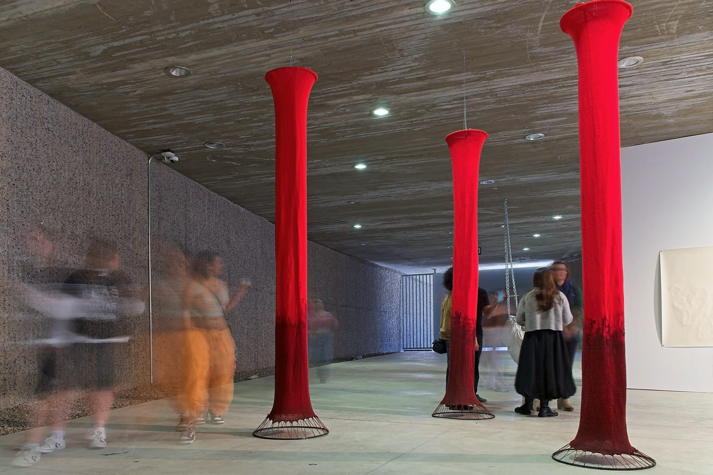
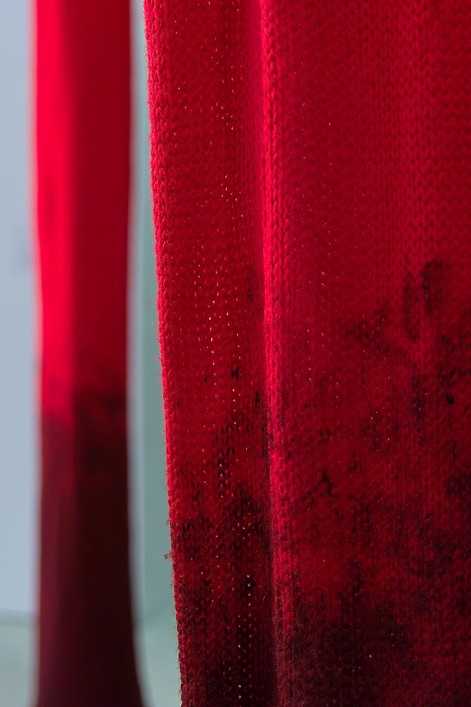
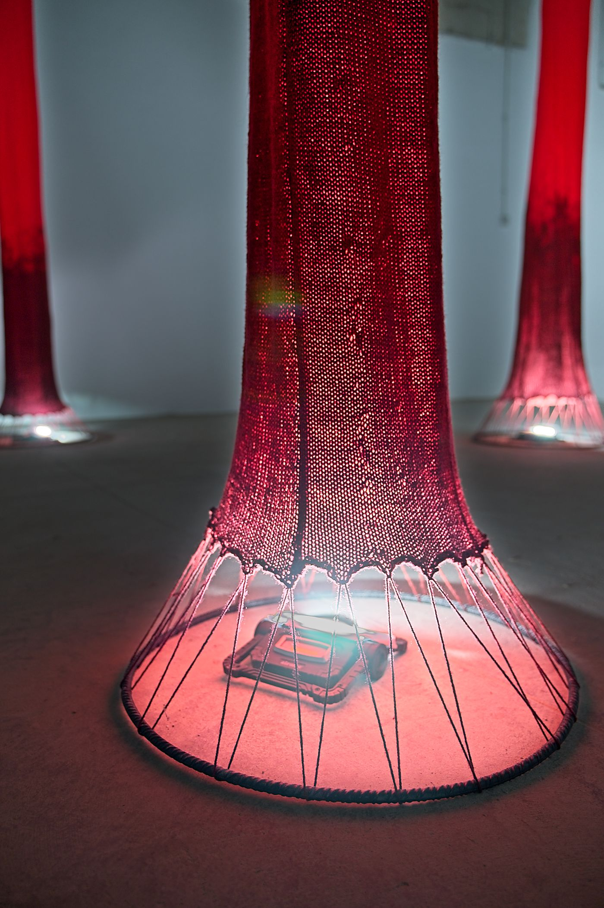
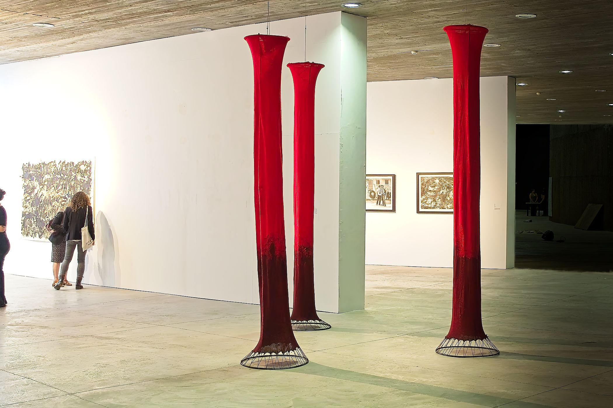

Espacio Tejido







Mis recuerdos más vívidos son en compañia de mi abuela mientras ella tejía y me contaba historias; conforme pasaban las horas, mi imaginación volaba y veía cómo esas historias se entrelazaban con el tejido. Entre las fibras parecían abrirse mundos enteros; creaba desde cero leyendas vivas con cada punto o urdimbre. La tela, a simple vista, es solo un material carente de significado; para mí guarda una carga, un legado, unas vivencias e historias que me han sido heredadas de generación en generación.